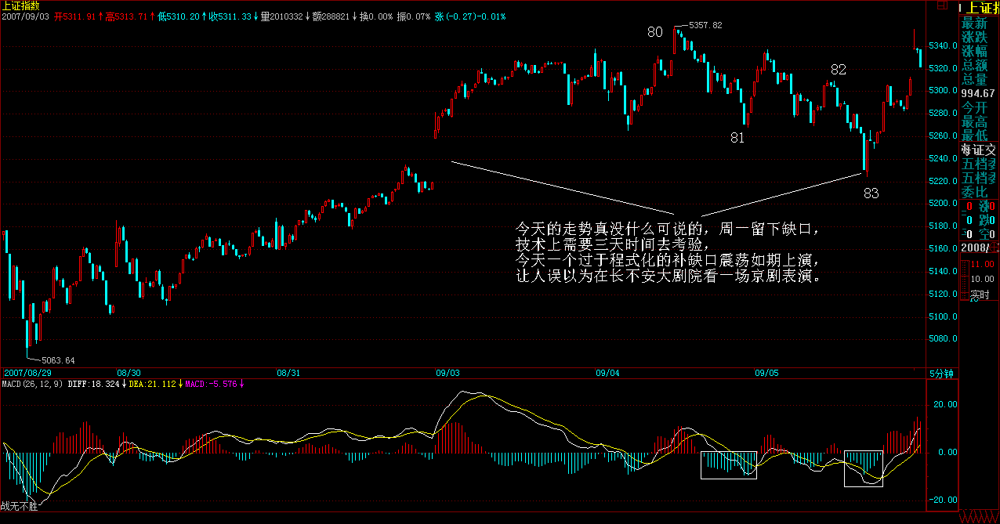
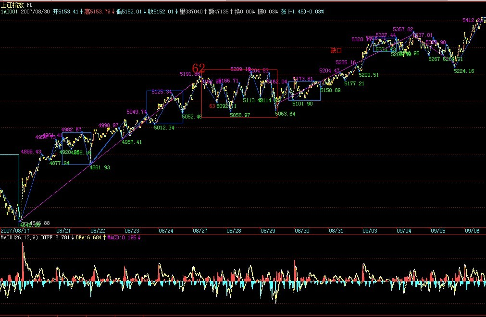

|
 |
教你炒股票76：逗庄家玩的一些杂史2
(2007-09-03 19:19:43)
现在梦话一点杂史，并不是说技术已经说完了，那还早着。只能在说技术中间穿插一下，这样不会让人完全沉浸在技术之中。毕竟，技术只是其中一方面。视角越全面，才会有更大的成就。
以下开始说梦话，谁信谁有毛病。
股票，公开的，谁都可以买卖，这就是其复杂所在。一般来说，单纯犯坏的难度当然比建设的难度小。如果你技术过关，你可能只拥有流通量5%，但你就能阻击一个有流通量50%的人。
玩死一个庄家，归根结底，就是两种：时间上害死他；空间上害死他。有些心理有毛病的庄家，最容易被时间上害死。特别那些有洁癖的，总是希望把盘给洗得一尘不染，这种人，最容易玩了。你只要不断在里面折腾，让他感觉到里面人特乱，筹码特乱，那么这些无聊的家伙就是洗呀洗的，洗到行情都走完了，还在那里洗。很多庄家，就是太有洁癖了而被害死的，特别那些经验不足的，资金实力又有限的。
以前，要玩这些家伙，有一招一直都很有效，不过后来用多了，就不大好用了，现在基本没用。当时，喜欢用一个帐号，齐刷刷就买一个巨大的惹眼的数量。能坐庄的，基本都能打单，这样一个帐号，不可能不知道。一般来说，这样一件事情，对于那些新手，就够他们一阵折腾了。开始，不用在盘面上搞他们，等他们适应一段时间，有点麻木，就要给新的刺激。例如，再找一个新的帐号买一个更大量的数量，注意，这些数量一般都控制在流通量的2%以下，不能大到影响这些家伙坐庄的信心。再折腾一段时间后，就要换手法，例如，在盘面上就要不时神经质地搞他两下，一般都是在他将高潮未高潮的时候，狠狠来一下，让他以后欲高潮时都留下后遗症，这样反复折腾，将他搞成ED男。
注意，折腾人不是靠光砸光买就可以。其实，真干的时候，就是来回弄，那家伙砸的时候，就要敢接，拉的时候就要敢给，但那几个明目装胆的帐号是不能动的，让他们搞不明白水的深浅。一般来说，阻击，只要拿流通的10%以下就足够了，其实，都不需要那么多。原则就是有能力在出手的一天内倒出一个10-20%上下的换手大量来，而且震荡的区间一定要足够大，有可能就涨停到跌停来回N次。一个股票，特别在准备高潮时倒出这样一个大幅度震荡的大量，想不ED都难了。
而倒出这样的量，实际需要的筹码并不要太多，因为，不可能全天的交易都是一方搞出来的。倒的时候，技术高的，完全可以做到顺便就把差价给弄了而筹码尽量不丢。但注意，这种折腾，一定是在底部或相对底部的位置，这样，最好就在庄家成本的附近，这样操作的难度就小多了。如果庄家给你玩恼火了，不玩了，撤了，一定要捣乱，不能让他顺利出去。只要你能让他亏钱出去，就是成功。一句话，就是不能让他挣钱跑。而且，在日常的折腾中，一定要弄各类手段去垫高其成本。
有些手法，和经验有关，不是一般人能干的。例如，要充分利用另外的分力的力量。庄家只是其中的一个分力，如果你能利用好其他分力，那庄家也只有给你折腾的份。
最狠的一种折腾，就是把这股票完全搞臭，也就是所有散户都知道这股票是ED男，然后就搞成两家或N家对垒。一般搞到这种地步，就是完全的强盗逻辑了。或者你就亏钱走，或者就送钱给大家花，否则大家就耗着，看谁怕谁。庄家比你拿得多，占的资金多，而且他的钱可能还来路不明，有期限的，这样折腾，100个至少99个要死掉。
当然还有更狠的，那就是工夫在诗外的玩法了，一般这种招数不能用，这样有点过分，有点不讲江湖规矩了。这种玩法，最普通的就是从资金面下手，只要能断了对方的资金来源，你想搞死谁不可以？当然还有更狠的，就没必要说了。
上面是说在时间上搞死，一般这种，都是走出一个复杂的大级别中枢。而在空间上搞死，那就是另一种玩法了。这种玩法的基本原则就是：庄家要风，就助他风；要雨，就助他雨。这样，先养其骄。等到其觉得不可一世、春风得意时，突然出手，这出手，一定要稳、准、狠，一下就要其命。在纯技术的角度，这就是要先砸出一个相当狠的第一段，然后，引发散户恐慌盘后，回接。这里，出手的位置很关键，太低没有杀伤力，太高又太晚。因此出手的时机决定成败，这需要经验、判断、技术很多综合的因素，不是一般人能干的。
回接后，就是用来阻击庄家反扑的。庄家给第一段出手后，肯定有反扑，这时候，就要有足够的子弹进行塔山阻击战。股票有一个好处，没有子弹，只要有钱，马上就可以采购，所以必须要利用好这一特性，控制好阻击的节奏、能量。
一定要注意，第一段后只能回接散户的恐慌盘，不能接庄家的抛盘。因为你先出手，所以如果庄家跟着也砸，你就要更狠地倒下去。最好直接倒出一个V型反转，这样，连塔山阻击战都省了，这股票，至少残废一年半载，再找一个机会完全把他废了，还不是迟早的事？
不能再说梦话了，快7点半了，等一下还有事忙。先下，再见。
技术、心理引发震荡
(2007-09-04 15:12:24)
4点在国贸有会，只能以最快速度说上两句。今天的震荡，在技术上，就是昨天的缺口，这已经明说过；心理上，最近天天报上有提示风险的文章，你说心理上能没压力？
这个震荡明天是否加大，其实都不重要，从纯技术上说，这缺口如果补了后没有有力的回拉，那短线问题就严重了。所以，缺口越不补越不存在技术压力，这叫强者恒强。一旦强者不能恒强，那较大级别的调整就不可避免的。所以从技术上，走得越强越不用担心，一旦有走弱迹象，反而是短线必须小心的。
个股方面，可能会有人骂今天的中石头和联通。这些人都是一点良心都没有的，没有中石头、联通，3600能不能转过来还是问题，最近这俩为大盘已经给了足够贡献了，一直缩着不动。到现在还不让动一下，万一刀子下来，连回跳的空间都没有，那真雷锋了。
闲话不能说了，图明天再贴，今天下午会后，晚上还有一个PE的项目要谈合同，所以晚上可能很晚。
对不起，先下，再见。
程式化补缺口震荡如期上演
(2007-09-05 16:10:28)
今天的走势真没什么可说的，周一留下缺口，技术上需要三天时间去考验，今天一个过于程式化的补缺口震荡如期上演，让人误以为在长不安大剧院看一场京剧表演。

程式化震荡后，才是问题的关键。从纯技术的角度，下图中，62-71的5分钟中枢突破后，71-80是一个标准的1分钟上涨，也就是次级别的离开，而80-83是一个标准的1分钟盘整回拉，也就是说83是教科书式的62-71的5分钟第三类买点，其后的走势无非两种：形成更大级别震荡，或者是5分钟中枢上移的延续。
现在，最坏的情况就是形成一个30分钟的中枢，最好的就是继续5分钟的上涨，直到形成新的5分钟中枢。技术上的形态，就这两种情况，没什么可说的，根据走势当下就可以判断。说得仔细点，就是明天不能新高，或新高后出现1分钟的不构成第三类买点的盘整背驰，那么必须要在目前位置形成新的5分钟中枢了，后面就很简单，就看中枢震荡后是出现第三类买点还是卖点了。至于明天能形成1分钟的第三类买点，那么大盘就将上涨去延续寻找新的5分钟中枢的过程。

个股方面，二、三线题材股继续发威，这是好现象。而一线大盘，关键就看建行的发行价了，如果搞出一个比现在中行、工行差不多甚至还高的发行价格，那么这些一线大盘就谁都按不住了。这其实也是本ID为什么一手题材股、一手中字头，两手都要硬的原因。你想，如果中移动发30-50元，那么中国联通待在10元之下，他好意思？如果中石油也搞个20-30元的，中石头怎么好意思在20元之下。
目前，这些大石头们最大的支持或动力，就是同类回归的价格，一旦建行出现一个高发行价，后面回来的想低都没门了。这样，各位就继续疯狂吧。
现在，情况很清楚了，本ID也说得很明白，管它明日洪水滔天，如果你心态好、真来家伙时能手起刀落，够恨，那就充分享受这疯狂的游戏吧。
东风吹，战鼓擂，这个世界谁怕谁？
但如果你没这胆子，就把仓位调节好。否则，你又想疯狂，又要疯狂没有任何代价，那还是回火星去吧。
今天可以回答问题到5点。
缠中说禅：
2007-09-05 16:16:28 [举报]
[匿名] 新浪网友 删除此人所有评论
缠中说禅：
2007-09-05 16:22:56 [举报]
[匿名] 退伍老兵 删除此人所有评论
缠中说禅：
2007-09-05 16:24:14 [举报]
骄阳10000 删除此人所有评论
缠中说禅：
2007-09-05
16:33:55 [举报]
[匿名] 顶石猴的问题 我的问题是：分型的开始和结束是怎么定义的？说第二个特征序列没有三个元素，根本不存在就根本不存在出现分段中第二种情况的可能，那么第二种情况的那个三段例图，也符合第二特征序列没三个元素的情况吧，为什么会是三段？
缠中说禅：
2007-09-05
16:46:39 [举报]
[匿名] 此生如初见 删除此人所有评论
缠中说禅：
2007-09-05
16:52:47 [举报]
石猴
缠中说禅：
2007-09-05
16:54:43 [举报]
全线飘红 删除此人所有评论 缠中说禅：
2007-09-05
16:59:02 [举报]
[匿名] 手机用户 删除此人所有评论
缠中说禅：
2007-09-05
17:00:46 [举报]
[匿名] 新浪网友 删除此人所有评论
缠中说禅：
2007-09-05
17:03:36 [举报]
[匿名] 新浪网友 删除此人所有评论
缠中说禅：
2007-09-05
17:06:20 [举报]
[匿名] 大盘 删除此人所有评论
缠中说禅：
2007-09-05
17:13:18 [举报]
(娇：考虑后来的分型区间问题补充D后面的分型如果是顶，AD也不是一笔，底分在顶分区间里面了。）
|
|
|
|